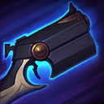

核心裝備
 蒐集者
蒐集者 狂風之力
狂風之力 多明尼克的問候
多明尼克的問候 磁性雷射槍
磁性雷射槍 無盡之刃
無盡之刃
以下為本站 7.2d 校正後的標準配置；實戰仍需依敵方陣容調整。


技能優先：Q > W > E

固定四發彈匣，第四發必定暴擊並附帶斬殺傷害；暴擊會提高跑速。
投擲手雷在敵人之間彈跳，前一個目標被擊殺時會提高後續彈跳傷害。
超遠距直線射擊；命中近期被燼或友軍傷害的英雄時可定身。
放置隱形陷阱，敵人踩到後緩速並延遲爆炸造成魔法傷害。
架起超遠距狙擊槍最多射擊四發，子彈造成緩速與斬殺傷害，第四發必定暴擊。
1技彈跳 → 普攻標記 → 2技定身 → 接續普攻
先用狂舞手雷經殘血士兵彈到英雄，再普攻留下標記並接致命伏筆；二技命中後打一發就撤，避免換彈時被反打。
3技陷阱緩速 → 2技定身 → 普攻 → 1技補傷害 → 第四發收尾
把魔幻時刻放在狹口或敵方退路，緩速後致命伏筆更容易命中；第四發留到目標低血量時打出最大斬殺收益。
2技接控 → 4技架槍 → 第一至三發減速 → 第四發暴擊 → 被動跑速調位
先用二技配合隊友控制，再在敵方無法立即突進的位置開大；前幾發用來減速與逼位，第四發瞄準最低血量目標。
隨時掌握彈匣與換彈節奏，利用第四發和狂舞手雷彈跳建立血量差。第四發打完後會進入換彈空窗，不能在沒有退路時繼續站前；致命伏筆較適合接隊友控制或敵人已被標記時使用。
蒐集者與狂風之力完成後，燼的爆發與收尾能力進入強勢期。物件團先在河道與狹口放置魔幻時刻取得視野與緩速，再用致命伏筆遠距接控；華麗謝幕應在安全位置開啟，用來開戰減速或處理殘血。
燼不靠高攻速持續站樁，而是依靠每發普攻、技能與跑速加成反覆拉扯。保持在前排後方，第四發優先打能安全命中的低血量目標；若敵方刺客仍未露面，大絕不要過早架槍。
對局名單是本站依英雄機制與目前配置整理的參考，不等同固定勝率。
先照標準出裝與符文走；只有敵方陣容真的形成威脅時，再替換必要格子。
觸發：敵方至少有 2 名高生命／高護甲前排，而且團戰多數時間必須先處理前排。
標準配置已經有足夠打坦能力；如果已有斷切、百分比穿透或殞落，就不要為了「坦克多」硬拆暴擊／攻速核心。
觸發：敵方有多名能直接貼到後排的刺客／爆發英雄，或你常在開始輸出前就被秒。
守護天使提供物防與復活，適合把最後一個純輸出位換成容錯。
魔提斯深淵提供魔防與低血量魔法護盾，比單純增加輸出更能保住進場或持續輸出。
骨甲直接降低同一名敵人接續幾次技能或普攻的傷害。
觸發：敵方有多個硬控，而且控制鏈會讓你直接失去輸出時間。
先購買水銀飾帶取得主動解控，之後再合成水星彎刀；水銀飾帶是合成組件，不是另一件要與水星彎刀互換的成裝。
犧牲部分輸出型傳奇符文，換取韌性與緩速抗性。
提醒：水星彎刀的路線是先購買水銀飾帶，再完成水星彎刀；水銀飾帶不是另一件終局成裝。
觸發：敵方有多名高治療／高吸血英雄，或核心前排能在團戰中大量回血。
致死宣告兼顧暴擊、穿透與重創，適合射手在不拆核心輸出邏輯下補反治療。
觸發：敵方有多個大量護盾來源，而且己方沒有其他更適合負責反護盾的英雄。
巨蛇鋒牙降低敵方護盾，只有護盾真的成為團戰主要問題時才值得犧牲一般輸出位。
提醒：反護盾裝通常是彈性位，不要只因敵方有一個小護盾就固定購買。
7.2a 飛龍路第一批正式攻略：技能名稱與核心機制依 Riot Games 台灣《激鬥峽谷》英雄頁校正；版本基準採官方 7.2a 更新公告，出裝、符文、召喚師技能與實戰節奏交叉參考 WildRiftFire Patch 7.2a 後整合。Tier 維持本站既有飛龍路評級。｜v65：套用吉茵珂絲 v64 固定母版，補齊起手裝、核心三件、五件成裝、Lv.1～15 加點、三組連招與前中後期策略。｜v76 第二階段：新增 3 位合適輔助與搭配理由，並完成攻略內容欄位驗收。
本站於 2026-08-27 依 Patch 7.2d 重新檢查此配置。 Tier、出裝、符文與對局屬於 Wild Rift Guide 的整理與分析，不是 Riot Games 官方推薦；版本改動後會再依官方公告與實戰資料校正。